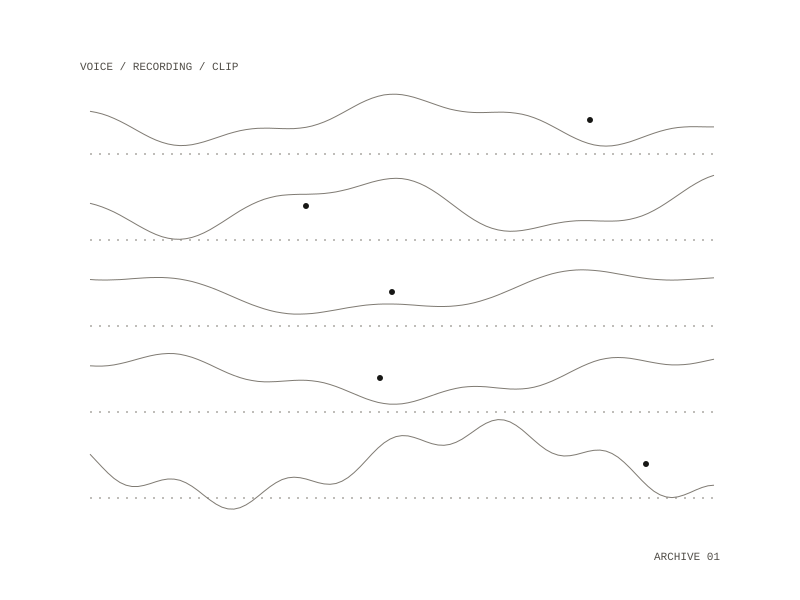

Spoken Word
A curated audio archive of radical voices: one canonical recording per person, of them speaking or reading their own work, chosen for political weight rather than literary award status. A pipeline turns each recording into a small set of clips ready for a mix.

The roster
Toni Morrison, Audre Lorde, Octavia Butler, Anohni, James Baldwin, Edward Said, Arundhati Roy, Angela Davis, June Jordan, Assata Shakur, Refaat Alareer, Ali Abunimah, Batool Abu Akleen, Bisan Owda, David Graeber, David Wojnarowicz, Judith Butler, Etel Adnan and Shirley Chisholm. Each person has a catalog file holding the source address, the licence and the reason for the pick. Sources come first from the Internet Archive, PennSound, the Pacifica Radio Archives and the channels of broadcasters and universities. The archive is for personal listening and educational reference, with no redistribution.
From recording to clip
Each recording is downloaded and checked against a sha256 checksum, transcribed with a timestamp for every word, and split into the main speaker and everyone else. Lines are then picked twice: once by a heuristic and once by a model, each writing its own file. The heuristic looks for commitment markers ("from now on"), first-person declarations, possessives that name a stake ("my body / your silence") and parallelism. It scores "I am the wrong sex" and "I am hungry" the same, because both open with "I am"; the model reads where a line sits in the arc, and for June Jordan it picked "My name is my own, my own, my own."
What makes a clip
A clip starts at the head of a word, ends on the end of a sentence or a pause of at least half a second, is speech for at least 80% of its length, makes sense lifted out of context, and runs 2.5 to 8 seconds, or up to 12 seconds for a longer phrase. The cutter walks forward through the word timestamps until it finds a sentence end or a pause, or reaches the cap; across the archive, 21% of clips were extended this way, by 2.66 seconds on average. There is no automated test suite: checking a clip means listening to it and reading the transcript.
19 people, each with one canonical recording
short clips, cut at the end of a sentence or a pause